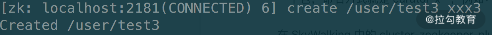
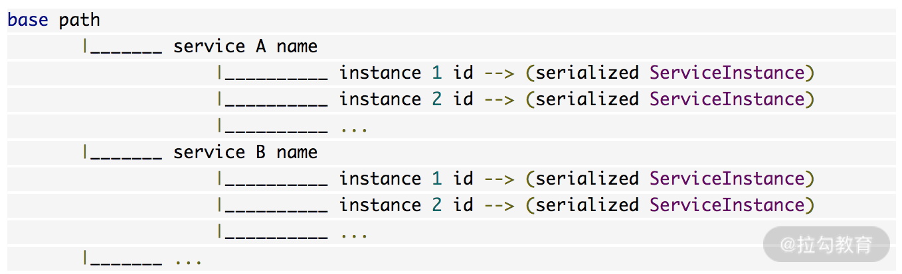

- 00 开篇词 深入掌握 Dubbo 原理与实现，提升你的职场竞争力.md.html
- 01 Dubbo 源码环境搭建：千里之行，始于足下.md.html
- 02 Dubbo 的配置总线：抓住 URL，就理解了半个 Dubbo.md.html
- 03 Dubbo SPI 精析，接口实现两极反转（上）.md.html
- 04 Dubbo SPI 精析，接口实现两极反转（下）.md.html
- 05 海量定时任务，一个时间轮搞定.md.html
- 06 ZooKeeper 与 Curator，求你别用 ZkClient 了（上）.md.html
- 07 ZooKeeper 与 Curator，求你别用 ZkClient 了（下）.md.html
- 08 代理模式与常见实现.md.html
- 09 Netty 入门，用它做网络编程都说好（上）.md.html
- 10 Netty 入门，用它做网络编程都说好（下）.md.html
- 11 简易版 RPC 框架实现（上）.md.html
- 12 简易版 RPC 框架实现（下）.md.html
- 13 本地缓存：降低 ZooKeeper 压力的一个常用手段.md.html
- 14 重试机制是网络操作的基本保证.md.html
- 15 ZooKeeper 注册中心实现，官方推荐注册中心实践.md.html
- 16 Dubbo Serialize 层：多种序列化算法，总有一款适合你.md.html
- 17 Dubbo Remoting 层核心接口分析：这居然是一套兼容所有 NIO 框架的设计？.md.html
- 18 Buffer 缓冲区：我们不生产数据，我们只是数据的搬运工.md.html
- 19 Transporter 层核心实现：编解码与线程模型一文打尽（上）.md.html
- 20 Transporter 层核心实现：编解码与线程模型一文打尽（下）.md.html
- 21 Exchange 层剖析：彻底搞懂 Request-Response 模型（上）.md.html
- 22 Exchange 层剖析：彻底搞懂 Request-Response 模型（下）.md.html
- 23 核心接口介绍，RPC 层骨架梳理.md.html
- 24 从 Protocol 起手，看服务暴露和服务引用的全流程（上）.md.html
- 25 从 Protocol 起手，看服务暴露和服务引用的全流程（下）.md.html
- 26 加餐：直击 Dubbo “心脏”，带你一起探秘 Invoker（上）.md.html
- 27 加餐：直击 Dubbo “心脏”，带你一起探秘 Invoker（下）.md.html
- 28 复杂问题简单化，代理帮你隐藏了多少底层细节？.md.html
- 29 加餐：HTTP 协议 + JSON-RPC，Dubbo 跨语言就是如此简单.md.html
- 30 Filter 接口，扩展 Dubbo 框架的常用手段指北.md.html
- 31 加餐：深潜 Directory 实现，探秘服务目录玄机.md.html
- 32 路由机制：请求到底怎么走，它说了算（上）.md.html
- 33 路由机制：请求到底怎么走，它说了算（下）.md.html
- 34 加餐：初探 Dubbo 动态配置的那些事儿.md.html
- 35 负载均衡：公平公正物尽其用的负载均衡策略，这里都有（上）.md.html
- 36 负载均衡：公平公正物尽其用的负载均衡策略，这里都有（下）.md.html
- 37 集群容错：一个好汉三个帮（上）.md.html
- 38 集群容错：一个好汉三个帮（下）.md.html
- 39 加餐：多个返回值不用怕，Merger 合并器来帮忙.md.html
- 40 加餐：模拟远程调用，Mock 机制帮你搞定.md.html
- 41 加餐：一键通关服务发布全流程.md.html
- 42 加餐：服务引用流程全解析.md.html
- 43 服务自省设计方案：新版本新方案.md.html
- 44 元数据方案深度剖析，如何避免注册中心数据量膨胀？.md.html
- 45 加餐：深入服务自省方案中的服务发布订阅（上）.md.html
- 46 加餐：深入服务自省方案中的服务发布订阅（下）.md.html
- 47 配置中心设计与实现：集中化配置 and 本地化配置，我都要（上）.md.html
- 48 配置中心设计与实现：集中化配置 and 本地化配置，我都要（下）.md.html
- 49 结束语 认真学习，缩小差距.md.html
- 捐赠
07 ZooKeeper 与 Curator，求你别用 ZkClient 了（下）
在上一课时我们介绍了 ZooKeeper 的核心概念以及工作原理，这里我们再简单了解一下 ZooKeeper 客户端的相关内容，毕竟在实际工作中，直接使用客户端与 ZooKeeper 进行交互的次数比深入 ZooKeeper 底层进行扩展和二次开发的次数要多得多。从 ZooKeeper 架构的角度看，使用 Dubbo 的业务节点也只是一个 ZooKeeper 客户端罢了。
ZooKeeper 官方提供的客户端支持了一些基本操作，例如，创建会话、创建节点、读取节点、更新数据、删除节点和检查节点是否存在等，但在实际开发中只有这些简单功能是根本不够的。而且，ZooKeeper 本身的一些 API 也存在不足，例如：
- ZooKeeper 的 Watcher 是一次性的，每次触发之后都需要重新进行注册。
- 会话超时之后，没有实现自动重连的机制。
- ZooKeeper 提供了非常详细的异常，异常处理显得非常烦琐，对开发新手来说，非常不友好。
- 只提供了简单的 byte[] 数组的接口，没有提供基本类型以及对象级别的序列化。
- 创建节点时，如果节点存在抛出异常，需要自行检查节点是否存在。
- 删除节点就无法实现级联删除。
常见的第三方开源 ZooKeeper 客户端有 ZkClient 和 Apache Curator。
ZkClient 是在 ZooKeeper 原生 API 接口的基础上进行了包装，虽然 ZkClient 解决了 ZooKeeper 原生 API 接口的很多问题，提供了非常简洁的 API 接口，实现了会话超时自动重连的机制，解决了 Watcher 反复注册等问题，但其缺陷也非常明显。例如，文档不全、重试机制难用、异常全部转换成了 RuntimeException、没有足够的参考示例等。可见，一个简单易用、高效可靠的 ZooKeeper 客户端是多么重要。
Apache Curator 基础
Apache Curator 是 Apache 基金会提供的一款 ZooKeeper 客户端，它提供了一套易用性和可读性非常强的 Fluent 风格的客户端 API ，可以帮助我们快速搭建稳定可靠的 ZooKeeper 客户端程序。
为便于你更全面了解 Curator 的功能，我整理出了如下表格，展示了 Curator 提供的 jar 包：

下面我们从最基础的使用展开，逐一介绍 Apache Curator 在实践中常用的核心功能，开始我们的 Apache Curator 之旅。
1. 基本操作
简单了解了 Apache Curator 各个组件的定位之后，下面我们立刻通过一个示例上手使用 Curator。首先，我们创建一个 Maven 项目，并添加 Apache Curator 的依赖：
<dependency>
<groupId>org.apache.curator</groupId>
<artifactId>curator-recipes</artifactId>
<version>4.0.1</version>
</dependency>
然后写一个 main 方法，其中会说明 Curator 提供的基础 API 的使用：
public class Main {
public static void main(String[] args) throws Exception {
// Zookeeper集群地址，多个节点地址可以用逗号分隔
String zkAddress = "127.0.0.1:2181";
// 重试策略，如果连接不上ZooKeeper集群，会重试三次，重试间隔会递增
RetryPolicy retryPolicy =
new ExponentialBackoffRetry(1000, 3);
// 创建Curator Client并启动，启动成功之后，就可以与Zookeeper进行交互了
CuratorFramework client =
CuratorFrameworkFactory.newClient(zkAddress, retryPolicy);
client.start();
// 下面简单说明Curator中常用的API
// create()方法创建ZNode，可以调用额外方法来设置节点类型、添加Watcher
// 下面是创建一个名为"user"的持久节点，其中会存储一个test字符串
String path = client.create().withMode(CreateMode.PERSISTENT)
.forPath("/user", "test".getBytes());
System.out.println(path);
// 输出:/user
// checkExists()方法可以检查一个节点是否存在
Stat stat = client.checkExists().forPath("/user");
System.out.println(stat!=null);
// 输出:true，返回的Stat不为null，即表示节点存在
// getData()方法可以获取一个节点中的数据
byte[] data = client.getData().forPath("/user");
System.out.println(new String(data));
// 输出:test
// setData()方法可以设置一个节点中的数据
stat = client.setData().forPath("/user","data".getBytes());
data = client.getData().forPath("/user");
System.out.println(new String(data));
// 输出:data
// 在/user节点下，创建多个临时顺序节点
for (int i = 0; i < 3; i++) {
client.create().withMode(CreateMode.EPHEMERAL_SEQUENTIAL)
.forPath("/user/child-";
}
// 获取所有子节点
List<String> children = client.getChildren().forPath("/user");
System.out.println(children);
// 输出：[child-0000000002, child-0000000001, child-0000000000]
// delete()方法可以删除指定节点，deletingChildrenIfNeeded()方法
// 会级联删除子节点
client.delete().deletingChildrenIfNeeded().forPath("/user");
}
}
2. Background
上面介绍的创建、删除、更新、读取等方法都是同步的，Curator 提供异步接口，引入了BackgroundCallback 这个回调接口以及 CuratorListener 这个监听器，用于处理 Background 调用之后服务端返回的结果信息。BackgroundCallback 接口和 CuratorListener 监听器中接收一个 CuratorEvent 的参数，里面包含事件类型、响应码、节点路径等详细信息。
下面我们通过一个示例说明 BackgroundCallback 接口以及 CuratorListener 监听器的基本使用：
public class Main2 {
public static void main(String[] args) throws Exception {
// Zookeeper集群地址，多个节点地址可以用逗号分隔
String zkAddress = "127.0.0.1:2181";
// 重试策略，如果连接不上ZooKeeper集群，会重试三次，重试间隔会递增
RetryPolicy retryPolicy = new ExponentialBackoffRetry(1000,3);
// 创建Curator Client并启动，启动成功之后，就可以与Zookeeper进行交互了
CuratorFramework client = CuratorFrameworkFactory
.newClient(zkAddress, retryPolicy);
client.start();
// 添加CuratorListener监听器，针对不同的事件进行处理
client.getCuratorListenable().addListener(
new CuratorListener() {
public void eventReceived(CuratorFramework client,
CuratorEvent event) throws Exception {
switch (event.getType()) {
case CREATE:
System.out.println("CREATE:" +
event.getPath());
break;
case DELETE:
System.out.println("DELETE:" +
event.getPath());
break;
case EXISTS:
System.out.println("EXISTS:" +
event.getPath());
break;
case GET_DATA:
System.out.println("GET_DATA:" +
event.getPath() + ","
+ new String(event.getData()));
break;
case SET_DATA:
System.out.println("SET_DATA:" +
new String(event.getData()));
break;
case CHILDREN:
System.out.println("CHILDREN:" +
event.getPath());
break;
default:
}
}
});
// 注意:下面所有的操作都添加了inBackground()方法，转换为后台操作
client.create().withMode(CreateMode.PERSISTENT)
.inBackground().forPath("/user", "test".getBytes());
client.checkExists().inBackground().forPath("/user");
client.setData().inBackground().forPath("/user",
"setData-Test".getBytes());
client.getData().inBackground().forPath("/user");
for (int i = 0; i < 3; i++) {
client.create().withMode(CreateMode.EPHEMERAL_SEQUENTIAL)
.inBackground().forPath("/user/child-");
}
client.getChildren().inBackground().forPath("/user");
// 添加BackgroundCallback
client.getChildren().inBackground(new BackgroundCallback() {
public void processResult(CuratorFramework client,
CuratorEvent event) throws Exception {
System.out.println("in background:"
+ event.getType() + "," + event.getPath());
}
}).forPath("/user");
client.delete().deletingChildrenIfNeeded().inBackground()
.forPath("/user");
System.in.read();
}
}
// 输出：
// CREATE:/user
// EXISTS:/user
// GET_DATA:/user,setData-Test
// CREATE:/user/child-
// CREATE:/user/child-
// CREATE:/user/child-
// CHILDREN:/user
// DELETE:/user
3. 连接状态监听
除了基础的数据操作，Curator 还提供了监听连接状态的监听器——ConnectionStateListener，它主要是处理 Curator 客户端和 ZooKeeper 服务器间连接的异常情况，例如， 短暂或者长时间断开连接。
短暂断开连接时，ZooKeeper 客户端会检测到与服务端的连接已经断开，但是服务端维护的客户端 Session 尚未过期，之后客户端和服务端重新建立了连接；当客户端重新连接后，由于 Session 没有过期，ZooKeeper 能够保证连接恢复后保持正常服务。
而长时间断开连接时，Session 已过期，与先前 Session 相关的 Watcher 和临时节点都会丢失。当 Curator 重新创建了与 ZooKeeper 的连接时，会获取到 Session 过期的相关异常，Curator 会销毁老 Session，并且创建一个新的 Session。由于老 Session 关联的数据不存在了，在 ConnectionStateListener 监听到 LOST 事件时，就可以依靠本地存储的数据恢复 Session 了。
这里 Session 指的是 ZooKeeper 服务器与客户端的会话。客户端启动的时候会与服务器建立一个 TCP 连接，从第一次连接建立开始，客户端会话的生命周期也开始了。客户端能够通过心跳检测与服务器保持有效的会话，也能够向 ZooKeeper 服务器发送请求并接受响应，同时还能够通过该连接接收来自服务器的 Watch 事件通知。
我们可以设置客户端会话的超时时间（sessionTimeout），当服务器压力太大、网络故障或是客户端主动断开连接等原因导致连接断开时，只要客户端在 sessionTimeout 规定的时间内能够重新连接到 ZooKeeper 集群中任意一个实例，那么之前创建的会话仍然有效。ZooKeeper 通过 sessionID 唯一标识 Session，所以在 ZooKeeper 集群中，sessionID 需要保证全局唯一。 由于 ZooKeeper 会将 Session 信息存放到硬盘中，即使节点重启，之前未过期的 Session 仍然会存在。
public class Main3 {
public static void main(String[] args) throws Exception {
// Zookeeper集群地址，多个节点地址可以用逗号分隔
String zkAddress = "127.0.0.1:2181";
// 重试策略，如果连接不上ZooKeeper集群，会重试三次，重试间隔会递增
RetryPolicy retryPolicy = new ExponentialBackoffRetry(1000,3);
// 创建Curator Client并启动，启动成功之后，就可以与Zookeeper进行交互了
CuratorFramework client = CuratorFrameworkFactory
.newClient(zkAddress, retryPolicy);
client.start();
// 添加ConnectionStateListener监听器
client.getConnectionStateListenable().addListener(
new ConnectionStateListener() {
public void stateChanged(CuratorFramework client,
ConnectionState newState) {
// 这里我们可以针对不同的连接状态进行特殊的处理
switch (newState) {
case CONNECTED:
// 第一次成功连接到ZooKeeper之后会进入该状态。
// 对于每个CuratorFramework对象，此状态仅出现一次
break;
case SUSPENDED: // ZooKeeper的连接丢失
break;
case RECONNECTED: // 丢失的连接被重新建立
break;
case LOST:
// 当Curator认为会话已经过期时，则进入此状态
break;
case READ_ONLY: // 连接进入只读模式
break;
}
}
});
}
}
4. Watcher
Watcher 监听机制是 ZooKeeper 中非常重要的特性，可以监听某个节点上发生的特定事件，例如，监听节点数据变更、节点删除、子节点状态变更等事件。当相应事件发生时，ZooKeeper 会产生一个 Watcher 事件，并且发送到客户端。通过 Watcher 机制，就可以使用 ZooKeeper 实现分布式锁、集群管理等功能。
在 Curator 客户端中，我们可以使用 usingWatcher() 方法添加 Watcher，前面示例中，能够添加 Watcher 的有 checkExists()、getData()以及 getChildren() 三个方法，下面我们来看一个具体的示例：
public class Main4 {
public static void main(String[] args) throws Exception {
// Zookeeper集群地址，多个节点地址可以用逗号分隔
String zkAddress = "127.0.0.1:2181";
// 重试策略，如果连接不上ZooKeeper集群，会重试三次，重试间隔会递增
RetryPolicy retryPolicy = new ExponentialBackoffRetry(1000,3);
// 创建Curator Client并启动，启动成功之后，就可以与Zookeeper进行交互了
CuratorFramework client = CuratorFrameworkFactory
.newClient(zkAddress, retryPolicy);
client.start();
try {
client.create().withMode(CreateMode.PERSISTENT)
.forPath("/user", "test".getBytes());
} catch (Exception e) {
}
// 这里通过usingWatcher()方法添加一个Watcher
List<String> children = client.getChildren().usingWatcher(
new CuratorWatcher() {
public void process(WatchedEvent event) throws Exception {
System.out.println(event.getType() + "," +
event.getPath());
}
}).forPath("/user");
System.out.println(children);
System.in.read();
}
}
接下来，我们打开 ZooKeeper 的命令行客户端，在 /user 节点下先后添加两个子节点，如下所示：

此时我们只得到一行输出：
NodeChildrenChanged,/user
之所以这样，是因为通过 usingWatcher() 方法添加的 CuratorWatcher 只会触发一次，触发完毕后就会销毁。checkExists() 方法、getData() 方法通过 usingWatcher() 方法添加的 Watcher 也是一样的原理，只不过监听的事件不同，你若感兴趣的话，可以自行尝试一下。
相信你已经感受到，直接通过注册 Watcher 进行事件监听不是特别方便，需要我们自己反复注册 Watcher。Apache Curator 引入了 Cache 来实现对 ZooKeeper 服务端事件的监听。Cache 是 Curator 中对事件监听的包装，其对事件的监听其实可以近似看作是一个本地缓存视图和远程ZooKeeper 视图的对比过程。同时，Curator 能够自动为开发人员处理反复注册监听，从而大大简化了代码的复杂程度。
实践中常用的 Cache 有三大类：
- NodeCache。 对一个节点进行监听，监听事件包括指定节点的增删改操作。注意哦，NodeCache 不仅可以监听数据节点的内容变更，也能监听指定节点是否存在，如果原本节点不存在，那么 Cache 就会在节点被创建后触发 NodeCacheListener，删除操作亦然。
- PathChildrenCache。 对指定节点的一级子节点进行监听，监听事件包括子节点的增删改操作，但是不对该节点的操作监听。
- TreeCache。 综合 NodeCache 和 PathChildrenCache 的功能，是对指定节点以及其子节点进行监听，同时还可以设置监听的深度。
下面通过示例介绍上述三种 Cache 的基本使用：
public class Main5 {
public static void main(String[] args) throws Exception {
// Zookeeper集群地址，多个节点地址可以用逗号分隔
String zkAddress = "127.0.0.1:2181";
// 重试策略，如果连接不上ZooKeeper集群，会重试三次，重试间隔会递增
RetryPolicy retryPolicy = new ExponentialBackoffRetry(1000,3);
// 创建Curator Client并启动，启动成功之后，就可以与Zookeeper进行交互了
CuratorFramework client = CuratorFrameworkFactory
.newClient(zkAddress, retryPolicy);
client.start();
// 创建NodeCache，监听的是"/user"这个节点
NodeCache nodeCache = new NodeCache(client, "/user");
// start()方法有个boolean类型的参数，默认是false。如果设置为true，
// 那么NodeCache在第一次启动的时候就会立刻从ZooKeeper上读取对应节点的
// 数据内容，并保存在Cache中。
nodeCache.start(true);
if (nodeCache.getCurrentData() != null) {
System.out.println("NodeCache节点初始化数据为："
+ new String(nodeCache.getCurrentData().getData()));
} else {
System.out.println("NodeCache节点数据为空");
}
// 添加监听器
nodeCache.getListenable().addListener(() -> {
String data = new String(nodeCache.getCurrentData().getData());
System.out.println("NodeCache节点路径：" + nodeCache.getCurrentData().getPath()
+ "，节点数据为：" + data);
});
// 创建PathChildrenCache实例，监听的是"user"这个节点
PathChildrenCache childrenCache = new PathChildrenCache(client, "/user", true);
// StartMode指定的初始化的模式
// NORMAL:普通异步初始化
// BUILD_INITIAL_CACHE:同步初始化
// POST_INITIALIZED_EVENT:异步初始化，初始化之后会触发事件
childrenCache.start(PathChildrenCache.StartMode.BUILD_INITIAL_CACHE);
// childrenCache.start(PathChildrenCache.StartMode.POST_INITIALIZED_EVENT);
// childrenCache.start(PathChildrenCache.StartMode.NORMAL);
List<ChildData> children = childrenCache.getCurrentData();
System.out.println("获取子节点列表：");
// 如果是BUILD_INITIAL_CACHE可以获取这个数据，如果不是就不行
children.forEach(childData -> {
System.out.println(new String(childData.getData()));
});
childrenCache.getListenable().addListener(((client1, event) -> {
System.out.println(LocalDateTime.now() + " " + event.getType());
if (event.getType().equals(PathChildrenCacheEvent.Type.INITIALIZED)) {
System.out.println("PathChildrenCache:子节点初始化成功...");
} else if (event.getType().equals(PathChildrenCacheEvent.Type.CHILD_ADDED)) {
String path = event.getData().getPath();
System.out.println("PathChildrenCache添加子节点:" + event.getData().getPath());
System.out.println("PathChildrenCache子节点数据:" + new String(event.getData().getData()));
} else if (event.getType().equals(PathChildrenCacheEvent.Type.CHILD_REMOVED)) {
System.out.println("PathChildrenCache删除子节点:" + event.getData().getPath());
} else if (event.getType().equals(PathChildrenCacheEvent.Type.CHILD_UPDATED)) {
System.out.println("PathChildrenCache修改子节点路径:" + event.getData().getPath());
System.out.println("PathChildrenCache修改子节点数据:" + new String(event.getData().getData()));
}
}));
// 创建TreeCache实例监听"user"节点
TreeCache cache = TreeCache.newBuilder(client, "/user").setCacheData(false).build();
cache.getListenable().addListener((c, event) -> {
if (event.getData() != null) {
System.out.println("TreeCache,type=" + event.getType() + " path=" + event.getData().getPath());
} else {
System.out.println("TreeCache,type=" + event.getType());
}
});
cache.start();
System.in.read();
}
}
此时，ZooKeeper 集群中存在 /user/test1 和 /user/test2 两个节点，启动上述测试代码，得到的输出如下：
NodeCache节点初始化数据为：test //NodeCache的相关输出
获取子节点列表：// PathChildrenCache的相关输出
xxx
xxx2
// TreeCache监听到的事件
TreeCache,type=NODE_ADDED path=/user
TreeCache,type=NODE_ADDED path=/user/test1
TreeCache,type=NODE_ADDED path=/user/test2
TreeCache,type=INITIALIZED
接下来，我们在 ZooKeeper 命令行客户端中更新 /user 节点中的数据：

得到如下输出：
TreeCache,type=NODE_UPDATED path=/user
NodeCache节点路径：/user，节点数据为：userData
创建 /user/test3 节点：

得到输出：
TreeCache,type=NODE_ADDED path=/user/test3
2020-06-26T08:35:22.393 CHILD_ADDED
PathChildrenCache添加子节点:/user/test3
PathChildrenCache子节点数据:xxx3
更新 /user/test3 节点的数据：

得到输出：
TreeCache,type=NODE_UPDATED path=/user/test3
2020-06-26T08:43:54.604 CHILD_UPDATED
PathChildrenCache修改子节点路径:/user/test3
PathChildrenCache修改子节点数据:xxx33
删除 /user/test3 节点：

得到输出：
TreeCache,type=NODE_REMOVED path=/user/test3
2020-06-26T08:44:06.329 CHILD_REMOVED
PathChildrenCache删除子节点:/user/test3
curator-x-discovery 扩展库
为了避免 curator-framework 包过于膨胀，Curator 将很多其他解决方案都拆出来了，作为单独的一个包，例如：curator-recipes、curator-x-discovery、curator-x-rpc 等。
在后面我们会使用到 curator-x-discovery 来完成一个简易 RPC 框架的注册中心模块。curator-x-discovery 扩展包是一个服务发现的解决方案。在 ZooKeeper 中，我们可以使用临时节点实现一个服务注册机制。当服务启动后在 ZooKeeper 的指定 Path 下创建临时节点，服务断掉与 ZooKeeper 的会话之后，其相应的临时节点就会被删除。这个 curator-x-discovery 扩展包抽象了这种功能，并提供了一套简单的 API 来实现服务发现机制。curator-x-discovery 扩展包的核心概念如下：
- ServiceInstance。 这是 curator-x-discovery 扩展包对服务实例的抽象，由 name、id、address、port 以及一个可选的 payload 属性构成。其存储在 ZooKeeper 中的方式如下图展示的这样。

- ServiceProvider。 这是 curator-x-discovery 扩展包的核心组件之一，提供了多种不同策略的服务发现方式，具体策略有轮询调度、随机和黏性（总是选择相同的一个）。得到 ServiceProvider 对象之后，我们可以调用其 getInstance() 方法，按照指定策略获取 ServiceInstance 对象（即发现可用服务实例）；还可以调用 getAllInstances() 方法，获取所有 ServiceInstance 对象（即获取全部可用服务实例）。
- ServiceDiscovery。 这是 curator-x-discovery 扩展包的入口类。开始必须调用 start() 方法，当使用完成应该调用 close() 方法进行销毁。
- ServiceCache。 如果程序中会频繁地查询 ServiceInstance 对象，我们可以添加 ServiceCache 缓存，ServiceCache 会在内存中缓存 ServiceInstance 实例的列表，并且添加相应的 Watcher 来同步更新缓存。查询 ServiceCache 的方式也是 getInstances() 方法。另外，ServiceCache 上还可以添加 Listener 来监听缓存变化。
下面通过一个简单示例来说明一下 curator-x-discovery 包的使用，该示例中的 ServerInfo 记录了一个服务的 host、port 以及描述信息。
public class ZookeeperCoordinator {
private ServiceDiscovery<ServerInfo> serviceDiscovery;
private ServiceCache<ServerInfo> serviceCache;
private CuratorFramework client;
private String root;
// 这里的JsonInstanceSerializer是将ServerInfo序列化成Json
private InstanceSerializer serializer =
new JsonInstanceSerializer<>(ServerInfo.class);
ZookeeperCoordinator(Config config) throws Exception {
this.root = config.getPath();
// 创建Curator客户端
client = CuratorFrameworkFactory.newClient(
config.getHostPort(), new ExponentialBackoffRetry(...));
client.start(); // 启动Curator客户端
client.blockUntilConnected(); // 阻塞当前线程，等待连接成功
// 创建ServiceDiscovery
serviceDiscovery = ServiceDiscoveryBuilder
.builder(ServerInfo.class)
.client(client) // 依赖Curator客户端
.basePath(root) // 管理的Zk路径
.watchInstances(true) // 当ServiceInstance加载
.serializer(serializer)
.build();
serviceDiscovery.start(); // 启动ServiceDiscovery
// 创建ServiceCache，监Zookeeper相应节点的变化，也方便后续的读取
serviceCache = serviceDiscovery.serviceCacheBuilder()
.name(root)
.build();
serviceCache.start(); // 启动ServiceCache
}
public void registerRemote(ServerInfo serverInfo)throws Exception{
// 将ServerInfo对象转换成ServiceInstance对象
ServiceInstance<ServerInfo> thisInstance =
ServiceInstance.<ServerInfo>builder()
.name(root)
.id(UUID.randomUUID().toString()) // 随机生成的UUID
.address(serverInfo.getHost()) // host
.port(serverInfo.getPort()) // port
.payload(serverInfo) // payload
.build();
// 将ServiceInstance写入到Zookeeper中
serviceDiscovery.registerService(thisInstance);
}
public List<ServerInfo> queryRemoteNodes() {
List<ServerInfo> ServerInfoDetails = new ArrayList<>();
// 查询 ServiceCache 获取全部的 ServiceInstance 对象
List<ServiceInstance<ServerInfo>> serviceInstances =
serviceCache.getInstances();
serviceInstances.forEach(serviceInstance -> {
// 从每个ServiceInstance对象的playload字段中反序列化得
// 到ServerInfo实例
ServerInfo instance = serviceInstance.getPayload();
ServerInfoDetails.add(instance);
});
return ServerInfoDetails;
}
}
curator-recipes 简介
Recipes 是 Curator 对常见分布式场景的解决方案，这里我们只是简单介绍一下，具体的使用和原理，就先不做深入分析了。
- Queues。提供了多种的分布式队列解决方法，比如：权重队列、延迟队列等。在生产环境中，很少将 ZooKeeper 用作分布式队列，只适合在压力非常小的情况下，才使用该解决方案，所以建议你要适度使用。
- Counters。全局计数器是分布式系统中很常用的工具，curator-recipes 提供了 SharedCount、DistributedAtomicLong 等组件，帮助开发人员实现分布式计数器功能。
- Locks。java.util.concurrent.locks 中提供的各种锁相信你已经有所了解了，在微服务架构中，分布式锁也是一项非常基础的服务组件，curator-recipes 提供了多种基于 ZooKeeper 实现的分布式锁，满足日常工作中对分布式锁的需求。
- Barries。curator-recipes 提供的分布式栅栏可以实现多个服务之间协同工作，具体实现有 DistributedBarrier 和 DistributedDoubleBarrier。
- Elections。实现的主要功能是在多个参与者中选举出 Leader，然后由 Leader 节点作为操作调度、任务监控或是队列消费的执行者。curator-recipes 给出的实现是 LeaderLatch。
总结
本课时我们重点介绍了 Apache Curator 相关的内容：
- 首先将 Apache Curator 与其他 ZooKeeper 客户端进行了对比，Apache Curator 的易用性是选择 Apache Curator 的重要原因。
- 接下来，我们通过示例介绍了 Apache Curator 的基本使用方式以及实际使用过程中的一些注意点。
- 然后，介绍了 curator-x-discovery 扩展库的基本概念和使用。
- 最后，简单介绍了 curator-recipes 提供的强大功能。
关于 Apache Curator，你有什么其他的见解？欢迎你在评论区给我留言，与我分享。
zk-demo 链接：https://github.com/xxxlxy2008/zk-demo 。
© 2019 - 2023 Liangliang Lee. Powered by gin and hexo-theme-book.